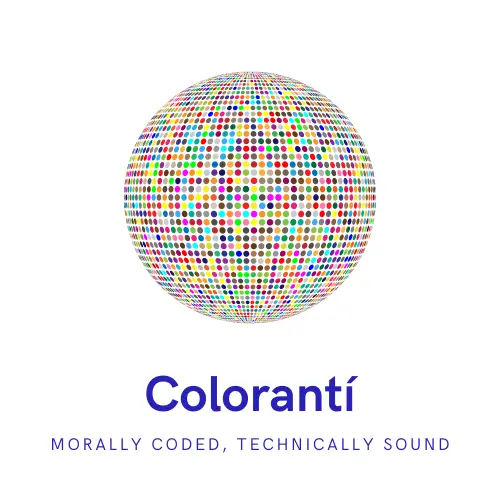
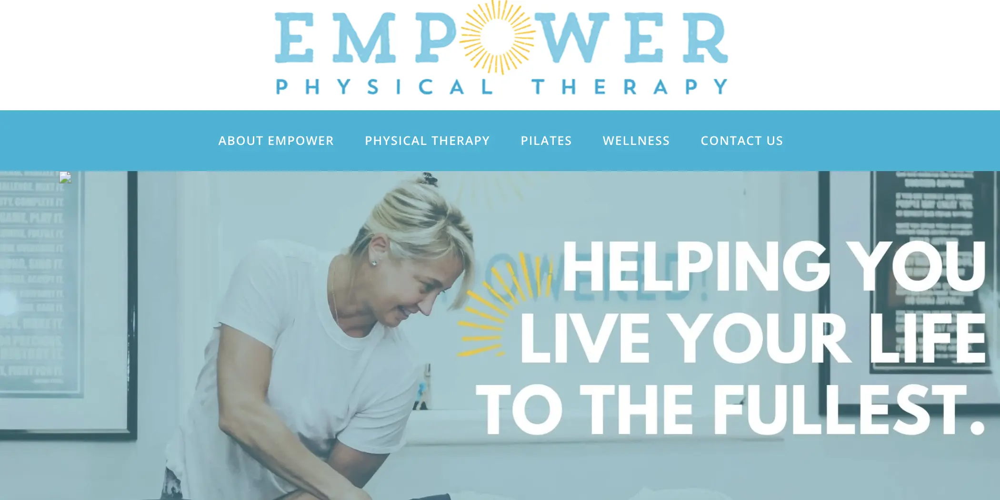
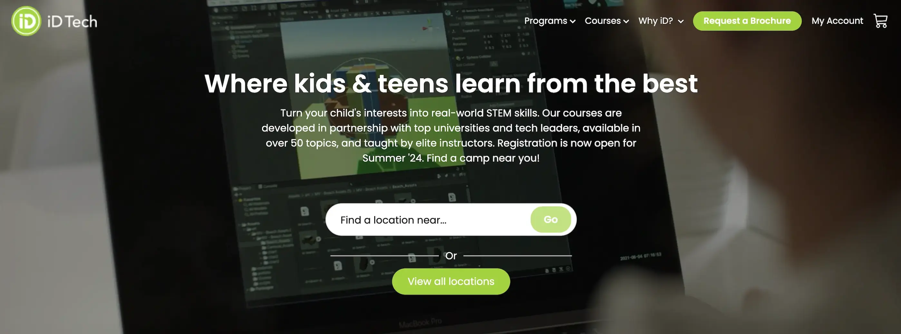
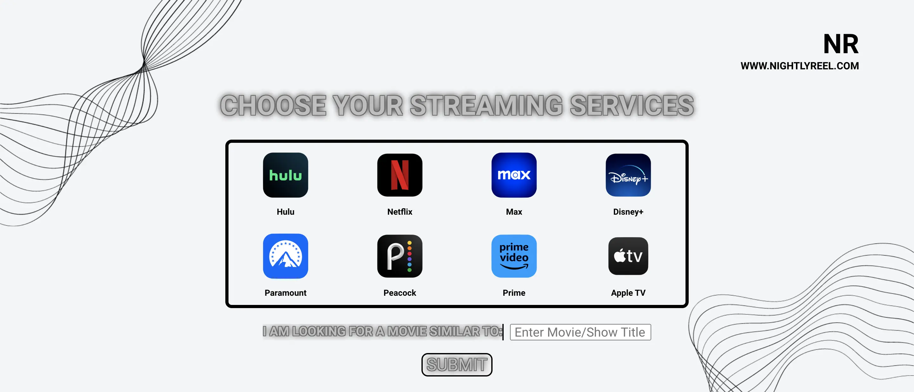
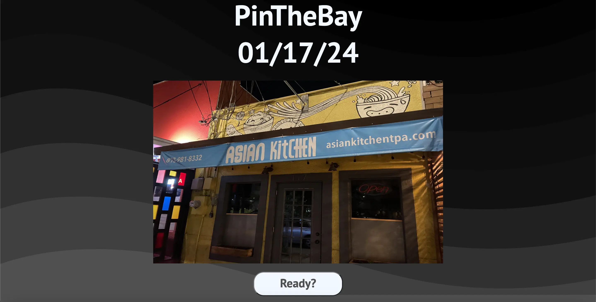
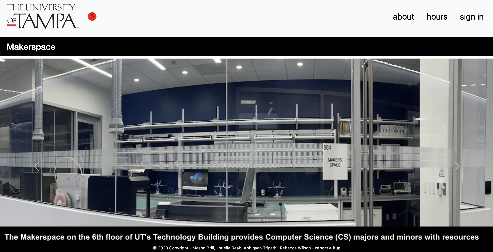
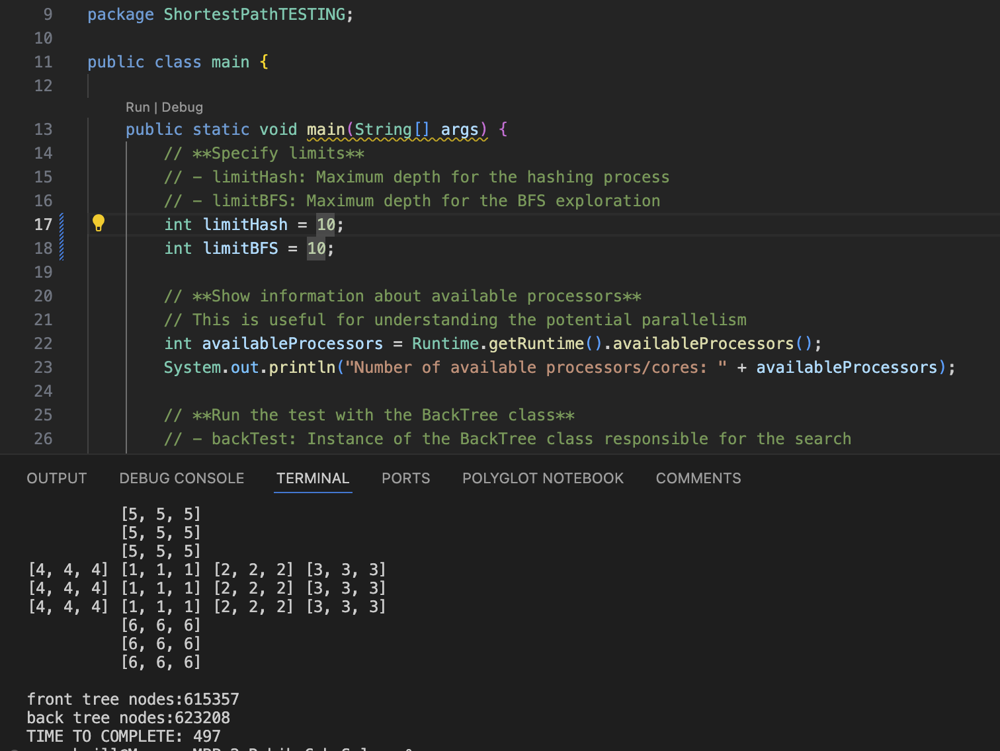

Welcome!
I am Mason Brill
I have always loved everything related to technology, which led me
to pursue my bachelor's degree in computer science at the University
of Tampa. I am committed to lifelong learning, which has proven
essential in the ever-changing field of technology. This is why I
continue to further my education through challenging certifications
and personal projects, all of which are showcased here. Please take
a look around and spend as much time as you like!
Professional Experience
Position:
QA Automation Engineer
Skills:
-Javascript
-Playwright
-C#
-SQL
-Azure Cloud Services
-Azure DevOps
-DataBricks
-Apache Airflow
Description:
As I completed my Bachelor of Science degree in computer science from the University of Tampa, I was very fortunate to have been offered an internship as a Quality Assurance Engineer with BST Global, an ERP solutions company. This internship not only helped provide me with an in depth introduction to quality assurance practices, but also gave me knowledge relating to workflow at an enterprise level along with CI/CD practices with Azure pipelines. After being with the company for six months, I was thrilled to be offered a full time postion of QA Automation Engineer. I could not be happier with BST Global and have gained a tremendous amount of skill and expierence.

Position:
Fullstack Developer
Skills:
-React
-Flask
-Python
-Javascript
-HTML
-CSS
Description:
During the winter/spring of 2024, I took on an internship as a software engineer at the startup Colorantí. This company had a new encryption algorithm they needed to showcase to investors and customers. I was tasked with developing a web application that would serve as demo for users to interact with to showcase how it works. This internship provided me with great hands on, professional software development.

Position:
Web Developer
Skills:
-WordPress
-PHP
-HTML
-CSS
-JavaScript
-SEO
-Web Hosting
Description:
Over the summer of 2023, I had an internship as a web developer working at a pilates and physical therapy company that needed some support for their website. It was hosted on Go-Daddy, and managed using WordPress. The company was mainly looking for some support on how they could give their website a more updated look, while improving their SEO.

Position:
Programming Instructor
Skills:
-Python
-Java
-Lua
-HTML
-Game Development
Description:
Over the spring/summer of 2023 I worked part time as a programming instructor at IDTech. I hosted private and class session ranging from 1-12 students. We covered introductory computer science topics in which the students were able to take the lessons in whatever direction they choose. The private lessons lasted one hour while the class sessions lasted 2 hours.
Projects

Skills:
-React
-Javascript
-Express
-Node
-CSS
-HTML
-API's
Description:
This project was very practical. It allows users to enter their streaming services and a movie or show title they enjoy. The website makes an API request and then returns to them similar movie and show titles along with information about them.

Skills:
-JavaScript
-React
-CSS
-MongoDB
-Express
-Node
-Google API's
Description:
This project was a fun one. It is essentially a Geo-guesser for Tampa Florida. It displays a picture that I took somewhere in Tampa, and then you would be shown the Google maps API and you would need to drag the marker to the location of the picture. It would then tell you how close you were within three decimal places of a mile using an appropriate distance formula.

Project:
Makerspace
Skills:
-Python
-Flask
-MySQL
-JavaScript
-Docker
-Cloud Deployment
Description:
My first real web application I ever developed was for the University of Tampa, with a team of three other individuals. We were tasked with created a web application that would allow students to reserve a new room on campus called the "Makerspace". It was a room for computer science majors that wanted to utilize certain hardware for developing particular projects. Our team created this over the course of a semester and at the end had a fully functioning finished product.

Skills:
-Java
-Binary Trees
-DFS
-BFS
-Data Structures
-Algorithms
Description:
This was a final project for my data structures and algorithm course. It works by generating a randomized Rubik's Cube and initalizing a solved one as well. Then, these two objects are set as the root of two individual binary trees referenced as a front and back tree. A series of expansions are performed on each of these trees and a BFS and DFS is performed. Each trees have a set of moves associated with each node referring how to get there from the root. As the searchs are performed, These steps are combined until the orientation of the cube matches a node in both the front and back tree. This gives a combined set of moves to perform on the cube to solve it.